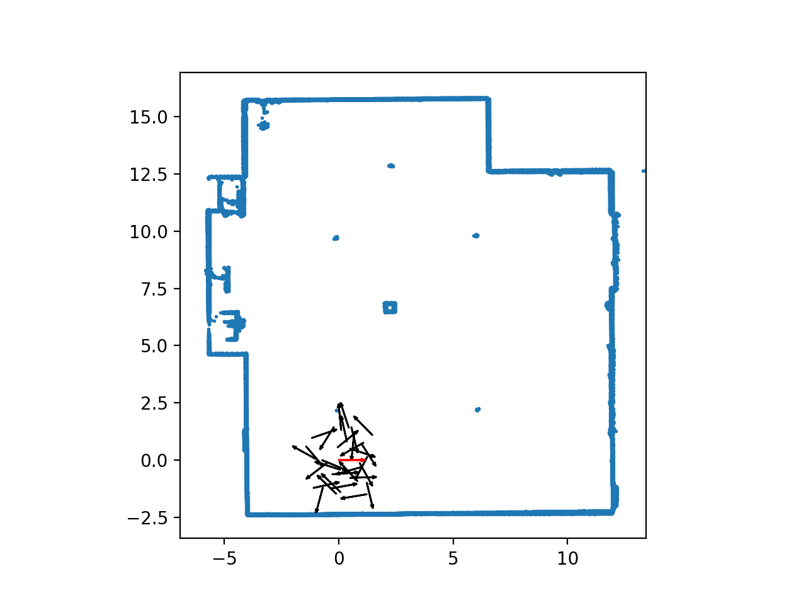

My name is Bolton Bailey.
I am a seventh-year Ph.D. student at UIUC. I was previously advised by the venerable Matus Telgarsky (from whom I stole this website layout). Now I'm part of Andrew Miller's Decentralized Systems Lab.
I prove things and write code. My main interest is in formal verification for cryptography. My other interests include: Quantum Cryptography, wrapping things in Recursive SNARKs, and Cryptoeconomics.
51% Attack via Difficulty Increase with a Small Quantum Miner (Myself and Or Sattath) (arXiv)
Formalizing Soundness Proofs of SNARKs (Myself and Andrew Miller) (code) (video)
General Partially Fair Multi-Party Computation with VDFs (Myself, Andrew Miller, and Or Sattath) (ePrint)
Merkle Trees Optimized for Stateless Clients in Bitcoin (Myself and Surya Sankagiri) WTSC '21. (ePrint) (video)
A Gradual, Semi-Discrete Approach to Generative Network Training via Explicit Wasserstein Minimization (Yucheng Chen, Matus Telgarsky, Chao Zhang, Myself, Daniel Hsu, Jian Peng) ICML 2019. (arXiv)
Size-Noise Tradeoffs in Generative Networks (Myself and Matus Telgarsky) NeurIPS 2018 Spotlight. (arXiv) (slides) (video)
See also: My Google Scholar profile.
During the Summer and Fall of 2022, I was a Software Engineer at RISC Zero, where I worked on a formalization of their zkVM for RISC-V.
I have a longstanding project on formalizing SNARKS using the Lean mathlib.
During Summer and Fall of 2020 my collaborator Surya and I worked on a network-efficient accumulator for Bitcoin. Our work was accepted at WTSC '21.
During Fall of 2019, I took Prof. David Forsyth's course on autonomous vehicles. Part of my project for the class was a lidar-based particle filter for tracking the location of a Gem e2 autonomous car. I made a GIF of it which you can see below. 
During Summer of 2019, I was a visit the Simons Institute. I presented in the Robustness reading group on poisoning. I also worked on some problems, but I was not able to solve them.
In 2019, I received a NSF Graduate Research Fellowship.
Most recently, I am a TA for David Heath's CS 598 course on Secure Computation. Previously, I was a TA for the spring 2019 Statistical Learning Theory (ECE 543) class.